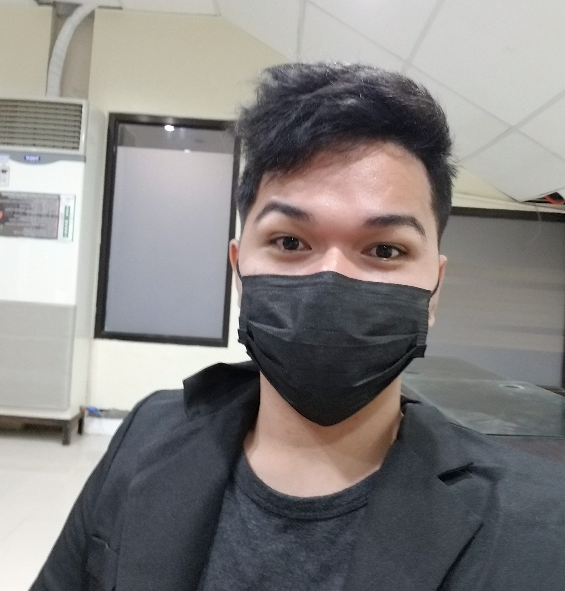

Personal Information
| Name: | John Michael Cagadas |
| Age: | 20 |
| Birthday: | March 5,2001 |
| Address: | Kauswagan, Tangub City |
| Height: | 175cm |
| Weight: | 65kg |
| Civil Status: | Single |
| Nationality: | Filipino |
| Motto: | "Always look for the good side of everything" |
Socialization is what makes human diverse from other God creations. Thus here I am, deeming myself as a being who have been granted with an average ability to socialize. This is one of my aspects that allow me to function well even at a team environment. However, I’m at my best self when I’m working alone. Due to the fact that I have my own technique on how to do things. Furthermore, I strive really hard in my study to not be stagnant from what I have attained in the present. Thus, my goal at the moment is to become a full stack developer which I perceive as a greener pasture.
As of today, I am still a 3rd year college student taking up the course Bachelor of Science Major in Computer Science at Gov. Alfonso D. Tan College. The stated state college has allowed me to learn a lot of programming languages such as C, C++, Java, PHP and etc. which I could utilized to create simple system that could be improved if I intensify my efforts unto it. Not to brag, but I viewed myself as a flexible being: I could fit in any environment. Thus as a proof, I already experienced working in my different workplace: being a disco operator, vendor, graphic design, chicken processing employee and etc. At the present, I am currently seeking for a workplace to work as a part-time employee. Thus if I am given an opportunity to work at your institution, I would like to utilize the said prospect to broaden my skills and learning. As these details have shown, I carry a commitment to excellence and passion to serve you and may contribute to your institution’s vision and mission.
As of today, I am still a 3rd year college student taking up the course Bachelor of Science Major in Computer Science at Gov. Alfonso D. Tan College. The stated state college has allowed me to learn a lot of programming languages such as C, C++, Java, PHP and etc. which I could utilized to create simple system that could be improved if I intensify my efforts unto it. Not to brag, but I viewed myself as a flexible being: I could fit in any environment. Thus as a proof, I already experienced working in my different workplace: being a disco operator, vendor, graphic design, chicken processing employee and etc. At the present, I am currently seeking for a workplace to work as a part-time employee. Thus if I am given an opportunity to work at your institution, I would like to utilize the said prospect to broaden my skills and learning. As these details have shown, I carry a commitment to excellence and passion to serve you and may contribute to your institution’s vision and mission.